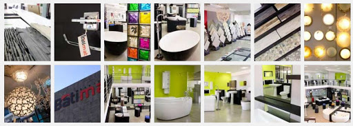

-
OÙ NOUS TROUVER
Zone Industrielle d’Oloumi Ancienne base de MBADOU
BP 9876 Libreville - GABON
Tél +241 62 02 11 11
Fax +241 11 74 23 98NOS RAYONS

Batiplus Libreville est leader du marché de la distribution de matériaux de construction au Gabon. Sur une surface de 4000 m2, dont 1500 m2 en libre-service, le showroom et le parc à fer proposent tout le nécessaire pour la construction, du sol au plafond. Professionnels du bâtiment et particuliers se rendent chez Batiplus Libreville pour s’imprégner des nouvelles tendances et découvrir une large gamme de produits de qualité, sélectionnés auprès des plus grandes marques internationales. Dans chaque rayon, un expert Batiplus est disponible et à l’écoute pour accompagner les clients vers la réussite de leurs projets et chantiers.
Zone Industrielle d’Oloumi Ancienne base de MBADOU
BP 9876 Libreville - GABON
Tél +241 62 02 11 11
Fax +241 11 74 23 98